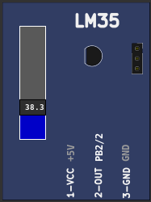
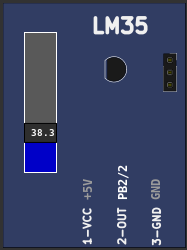

10.2.8 LM35 (Temperature)
This part is LM35 analog temperature sensor. The measurement range is 2 to 150 °C and voltage output is 10mV/°C.

This part is LM35 analog temperature sensor. The measurement range is 2 to 150 °C and voltage output is 10mV/°C.
